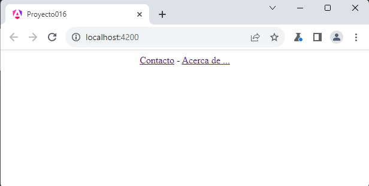
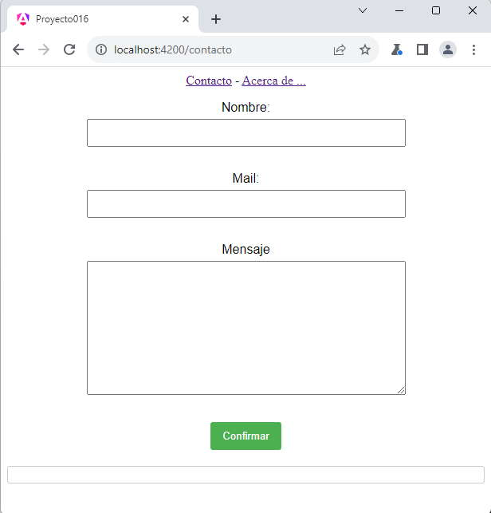
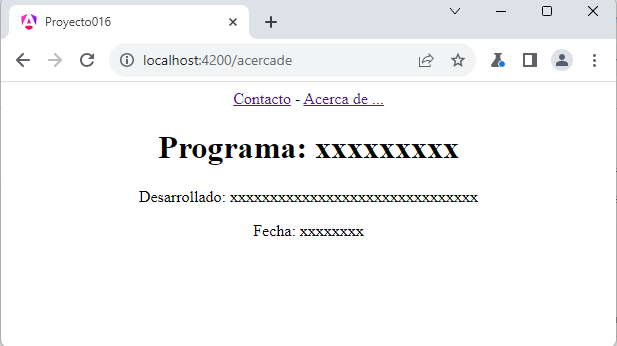

Angular incluye un módulo especial si queremos administrar nuestra aplicación mediante rutas.
Las rutas están dadas por la url, ejemplos de rutas pueden ser:
http://localhost:4200/contacto http://localhost:4200/acercade http://localhost:4200/proveedores
Luego según la ruta especificada mostramos una vista distinta, generalmente indicando un nombre de componente.
Cuando creamos la aplicación con Angular CLI nos genera los archivos básicos para trabajar con rutas (Router).
Implementar una aplicación que muestre dos enlaces en la parte superior de la página que acceda el primero a un formulario de contacto y el segundo una página de Acerca de.
Es decir que tenemos las siguientes pantallas:
Cuando se inicia:
Cuando se selecciona el enlace de contacto:
Cuando se selecciona el enlace de Acerca de...:
Desde la línea de comandos de Node.js procedemos a crear el proyecto016:
ng new proyecto016
Lo primero que vamos a hacer es crear las dos componentes que a posteriori configuraremos una ruta para cada uno.
Creamos la componente contacto:
ng generate component contacto
Implementamos el siguiente código para los tres archivos:
contacto.component.html
<form [formGroup]="formularioContacto" (ngSubmit)="submit()">
<p>Nombre:
<input type="text" formControlName="nombre">
</p>
<p>Mail:
<input type="text" formControlName="mail">
</p>
<p>Mensaje<br>
<textarea rows="10" cols="70" formControlName="mensaje"></textarea>
</p>
<button type="submit">Confirmar</button>
</form>
<div>{{datos}}</div>
contacto.component.ts
import { Component } from '@angular/core';
import { ReactiveFormsModule, FormControl, FormGroup } from '@angular/forms';
@Component({
selector: 'app-contacto',
imports: [ReactiveFormsModule],
templateUrl: './contacto.component.html',
styleUrl: './contacto.component.css'
})
export class ContactoComponent {
datos = '';
formularioContacto = new FormGroup({
nombre: new FormControl(''),
mail: new FormControl(''),
mensaje: new FormControl('')
});
submit() {
this.datos = `Nombre=${this.formularioContacto.value.nombre}
Mail=${this.formularioContacto.value.mail}
Mensaje=${this.formularioContacto.value.mensaje}
`;
}
}
contacto.component.css
/* Estilos para el formulario */
form {
max-width: 400px;
margin: 0 auto;
font-family: 'Arial', sans-serif;
}
p {
margin-bottom: 15px;
}
input,
textarea {
width: 100%;
padding: 8px;
margin: 5px 0 15px 0;
box-sizing: border-box;
}
button {
background-color: #4caf50;
color: #fff;
padding: 10px 15px;
border: none;
border-radius: 3px;
cursor: pointer;
}
button:hover {
background-color: #45a049;
}
/* Estilos para el resultado */
div {
margin-top: 20px;
padding: 10px;
border: 1px solid #ccc;
border-radius: 3px;
font-weight: bold;
}
Creamos la componente acercade:
ng generate component acercade
Implementamos el siguiente código para los tres archivos:
acercade.component.html
<h1>Programa: xxxxxxxxx</h1> <p>Desarrollado: xxxxxxxxxxxxxxxxxxxxxxxxxxxxxxx</p> <p>Fecha: xxxxxxxx</p>
Los otros dos archivos los dejamos sin cambios: 'acercade.component.css' y 'acercade.component.ts'
Ahora si vamos a lo nuevo, abrimos y modificamos el archivo 'app.routes.ts':
import { Routes } from '@angular/router';
import { ContactoComponent } from './contacto/contacto.component';
import { AcercadeComponent } from './acercade/acercade.component';
export const routes: Routes = [
{
path: 'contacto',
component: ContactoComponent
},
{
path: 'acercade',
component: AcercadeComponent
}
];
Modificamos el arreglo 'routes' con una serie de objetos que especifican las rutas. La propiedad path indica el nombre de la ruta y la propiedad component indica el nombre de la componente que se debe dibujar para dicha ruta.
Es importante importar las componentes:
import { ContactoComponent } from './contacto/contacto.component';
import { AcercadeComponent } from './acercade/acercade.component';
Nos queda modificar la componente principal, por un lado el archivo 'app.component.html':
<div style="text-align:center"> <a routerLink="/contacto">Contacto</a> - <a routerLink="/acercade">Acerca de ...</a> <router-outlet /> </div>
Mediante la etiqueta 'router-outlet' indicamos el lugar que debe mostrar la componente especificada por la ruta configurada en el archivo 'app.routes.ts' (ahora vemos el objetivo de la etiqueta <router-outlet /> que la dispone Angular por defecto cada vez que creamos un proyecto, en proyectos medianos o grandes es obligatorio el empleo de rutas)
Para cambiar de ruta mediante hipervínculos debemos iniciar la propiedad 'routerLink' asignando la ruta respectiva.
Finalmente el archivo 'app.component.ts':
import { Component } from '@angular/core';
import { RouterOutlet, RouterLink } from '@angular/router';
@Component({
selector: 'app-root',
imports: [RouterOutlet, RouterLink],
templateUrl: './app.component.html',
styleUrls: ['./app.component.css']
})
export class AppComponent {
}
Importamos la clase 'RouterLink'.
Cuando ejecutemos si accedemos al primer hipervínculo (tener en cuenta que no se recarga la página, no hay una petición al servidor, sino se resuelve la ruta con aplicación Angular en el navegador):
Por otro lado si accedemos a la otra ruta:
Podemos probar esta aplicación en la web aquí.